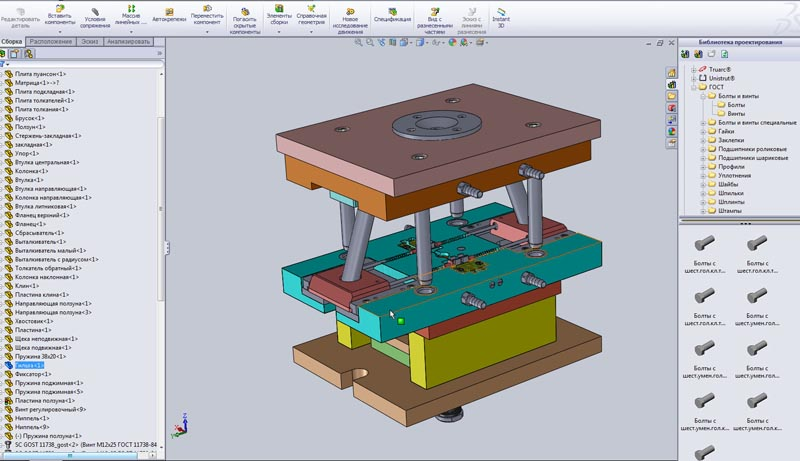

|
Специалисты компании ООО «НПП Оснастка» готовы изготовить пресс-форму абсолютно любого типа и уровня сложности, ведь для этого имеется необходимая квалификация, опыт и соответствующее техническое оснащение (эффективные металлорежущие станки, различные инструменты и высокотехнологичная оснастка). Учитывая тот факт, что работа над созданием пресс-форм является достаточно трудоемкой и сложной, ее реализацией занимаются мастера из нескольких отделов: математического моделирования, конструкторского, разработки управляющих программ, сборки и металлообработки, снабжения, наладки оборудования и контроля. |
 |
|
Основные этапы производства пресс-формИзготовление пресс-форм – это комплексная задача, в которой в обязательном порядке учитываются требования международных и отечественных стандартов. Также обратите внимание на следующее: мы настолько уверены в качестве своей продукции, что готовы предоставить на нее любую гарантию. На этапе разработки мы используем исключительно современные технологии, которые позволяют нам со 100%-й точностью соблюдать требования клиента, не допускать ошибок, реализовывать даже нестандартные проекты.
Алгоритм наших действий достаточно прост: 1. Проектирование. |
||
Все начинается с проектирования!Мы прекрасно понимаем, что именно проектирование пресс-форм является первым и самым важным шагом в нашей работе, и этому этапу мы уделяем особо пристальное внимание. Особенности работы наших специалистов заключаются в следующем: - мы никогда не начинаем работу над заказом без предварительного построения специальной трехмерной модели будущего изделия (наличие 3D-моделей – это отличная возможность устранить слабые места еще перед производством);
- мы стараемся взять у заказчика всю имеющуюся информацию, что позволяет нам на 100% удовлетворить запросы клиента (речь идет об эскизах, чертежах, математических моделях, образцах готового изделия);
|
 |
||
Некоторые тонкости изготовленияВ компании «НПП Оснастка» вы можете заказать пресс-формы любого типа: литьевые, выдувные, прямого прессования. Как мы добиваемся высоких результатов? Основной секрет заключается в том, что производство пресс-форм осуществляется исключительно после обсуждения всех деталей: технических и эксплуатационных характеристик, типа пресс-формы, материала, тиража. Важное направление в нашей работе – обработка металла, которая подразумевает выполнение нескольких манипуляций: - отжиг и снятие черновой поверхности материала (максимум 2 мм); Сроки изготовления, как правило, составляют 10-20 дней, но эта цифра может меняться в зависимости от сложности исполнения и тиража. |
|||
От чего зависит цена пресс-формы?
Благодаря опыту работы в данном сегменте рынка компания ООО «НПП Оснастка» научилась вести такую ценовую политику, которая будет выгодна клиентам. Мы по максимуму автоматизировали производственный процесс, подобрали наиболее оптимальную команду квалифицированных специалистов, заключили договора с ведущими поставщиками материалов.
Обсудить стоимость пресс формы вы можете по телефону (905) 106-07-74 или непосредственно на сайте. В любом случае она будет весьма демократичной, а основные факторы влияющие на цену – это конфигурация изделия, тип используемых материалов, сроки выполнения и, конечно же, тираж. Расчет стоимость производится на стадии формулировки технического задания. Именно на этом этапе мы обсуждаем с заказчиком габаритные размеры пресс-формы, количество гнезд, степень надежности конструкции и ресурс эксплуатации, тип толкающей системы и литниковой системы, требования к поверхности деталей.
Звоните нам прямо сейчас, уточняйте все подробности, оставляйте заявку на нужный объем изделий!